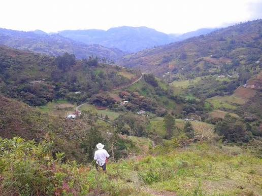

Cosecha HarvestJunio 2025
Cosecha 2025: Geisha alcanza 90.3 puntos SCA en cata internacional
2025 Harvest: Geisha scores 90.3 SCA points in international cupping
Esta temporada el lote de Geisha Lavado de Altos de Kitopamba superó sus propios récords. La fermentación anaerobia de 36 horas y el secado lento en camas africanas dieron como resultado una taza excepcional con notas de jazmín, bergamota y té blanco.
This season our Washed Geisha lot from Altos de Kitopamba broke its own records. The 36-hour anaerobic fermentation and slow drying on raised beds produced an exceptional cup with jasmine, bergamot and white tea notes.
Solicitar este loteRequest this lot